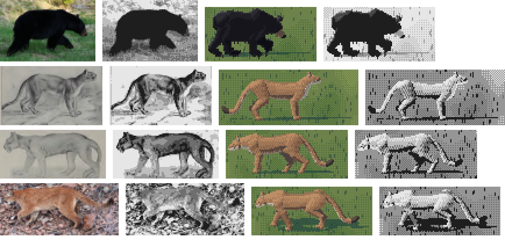
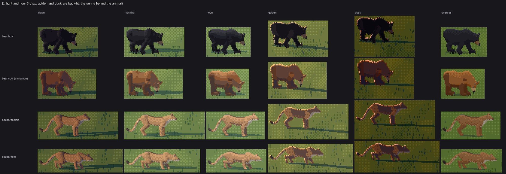

4. Black fur is its own material
Back to the tutorial. Code: palette.palette and palette.ramp, paint.value_field, hide.apply, valboard.py.
This page is about value. The bear taught me one way to get it wrong, and the cougar taught me the opposite way, and in both cases my eye missed it because the hue was right.
The grey bear
I forked the elk student's palette unchanged, and it painted a grey bear:

nb031. Photo and drawings area-reduced to 60, 30, 16, 8 px | mine. Top row: the photographed bear is black; mine is charcoal, with three lit planes on its flank.
Nothing was broken. The palette did exactly what it was designed for. Every material is a pair of colours read off photos, a shadow dark and a lit light, and each hour walks a six-step ramp between them in OKLab, pulling the lights toward the sun's colour and the darks toward the sky's ambient colour:
def ramp(dark, light, n, sun, amb, warm=0.22, cool=0.3, key=1.0):
Ls, La = to_lab(sun), to_lab(amb)
for i in range(n):
t = i / max(n - 1, 1)
c = to_lab(dark) * (1 - t) + to_lab(light) * t
c = c * (1 - warm * t ** 1.5) + Ls * warm * t ** 1.5 # lights toward the sun
c = c * (1 - cool * (1 - t) ** 2) + La * cool * (1 - t) ** 2 # darks toward the sky
On a tan elk the sky in the shadows looks like light. On a black bear, a 30% pull toward a pale blue sky lifts the darkest step from near-black to (35, 41, 53). Then the elk's value field spreads the lit side across steps 3 to 5, so the flank shows planes, and the hair-dash dither puts texture on them. You get a grey bear with a sculpted flank. A black bear in sun is black, with a narrow blue-grey sheen along the back and the top of the head.
Four changes
1. The sky tints only the sheen
blackfur = {rig.BODY, rig.LEG, rig.DARK, rig.CLAW, rig.NOSE, rig.EYE, rig.EARIN} \
if (ind.species == "bear" and ind.phase_colour == "black") else set()
for m, (d, l) in ct.items():
# black fur: the sky tints only the sheen, never the darks (an ambient-lifted black reads
# as a grey bear)
cool = h["cool"] * (0.25 if m in blackfur else 1.0)
r = ramp(d, l, STEPS, h["sun"], h["amb"], h["warm"] * (0.6 if m in blackfur else 1.0), cool, h["key"])

fig. The black bear's body ramp at each hour. Left: the hide defaults every other animal uses. Right: the black-fur rule. At morning the darkest step goes from (35, 41, 53), a blue-grey, to (13, 14, 19); the top step from (88, 85, 88) to (74, 72, 78). The darks move most, and the sheen keeps a little of the sun's colour, which is what makes golden and dusk read.
It applies only to the black phase. Brown and cinnamon bears are hide like any other and keep the defaults (sheet D, row 2).
2. The value field: a sheen, not planes
The elk's field maps lit surfaces linearly from n·L onto steps 2.8-5.15. For the bear it's replaced, and then the whole field is pushed down:
if ind.species == "bear":
# black fur: the lit family is a sheen, not a gradient. The back and the top of the head
# catch the sky; everything else sits low. Compress the lit family toward its top and the
# rest toward the shadow so the bear stays black and its form reads as a sheen line.
up = np.clip(n[..., 2], 0, 1)
x[litf] = 1.5 + 3.3 * np.clip((v[litf] - 0.35) / 0.6, 0, 1) ** 1.6 + 0.5 * up[litf] ** 2
# and the whole field sits lower: a black bear's flank in sun is still nearly black
x = 0.1 + x * 0.62
Two things are going on. The power of 1.6 keeps the steep part of the curve for surfaces facing the sun squarely, so most of the flank stays low and only a band climbs. The up² term gives upward-facing fur (the back, the top of the skull) the sky's sheen whatever the sun's direction. I got to 0.62 in two passes: 0.74 first (nb045), then the value board below.
3. No dither except in the sheen
if size_px >= 28 and species != "bear":
R.step = hair_quant(R.x) if hair else bayer_quant(R.x)
elif size_px >= 28:
# black fur is not a gradient to dither: it is dark, with a sheen that breaks along the
# hair. Round, then let the sheen band (steps >= 4) break into vertical hair dashes.
st = np.clip(np.floor(R.x + 0.5), 0, 5).astype(np.int32)
hq = hair_quant(R.x)
R.step = np.where(R.x >= 3.2, hq, st)
Dither is how a lit plane becomes a gradient. A black bear has no gradient to show, only a dark mass and a broken sheen, so the dashes live only in the sheen band. The bear's silhouette gets its texture from fringe.shag instead: guard hairs hanging in 1-2 px ticks under the belly and neck, and the odd tuft on the back. In a photo of a black bear, that ragged edge is most of the fur you can actually see.
4. One warm mark
Seton: "deep glossy black everywhere, excepting the muzzle, which is more or less brown". The muzzle is its own material with its own ramp, ((52, 36, 24), (176, 136, 94)). It covers the front half of the head, and it survives in the glyph painter as a single pixel at the nose from 6 px up (how-to 5). At every size where you can see a head, it's the thing that says which way the bear is facing.

nb031, nb087. The size board before and after. The final bear is black with a blue-grey sheen on the back and a brown muzzle, and at 8 px it's a black lump with a warm pixel at one end. The photo's bear at 8 px is exactly that lump.
The value board, and a flaw in it
The elk student ended its hide page by naming the instrument it would build next: photo and render at hero size, each quantised to six steps, compared plane by plane. I built it:
def quant(L, mask, n=6):
v = L[mask]
lo, hi = np.percentile(v, 3), np.percentile(v, 97)
q = np.clip(((L - lo) / max(hi - lo, 1e-3) * n).astype(int), 0, n - 1)
out = (q / (n - 1) * 200 + 30).astype(np.uint8)
out[~mask] = 255
return out
...
qp = quant(Lp, np.ones(Lp.shape, bool)) # the photo: over the whole crop
qm = quant(lum(mine), on) # mine: over the animal only

nb071. Photo at 60 px | its 6-step map | mine | my map. The photographed bear is one step, black; mine spans four.
It told me the bear's lit planes were still there, and I compressed the field a second time (0.74 → 0.62). While writing this page I noticed what the last two lines above do. They quantise the photo over its whole crop, grass included, but quantise my render over the animal only, so any variation in my bear is stretched across all six steps. Every one of my maps was exaggerated. Here is the same board with both quantised over the whole cell:

fig. The value board with photo and render quantised the same way, background included. The bear is now close: one dark mass with a lighter band on the back and shoulder. The photo's sheen is further back, on the rump. The cougars are the next section.
The lesson is an old one, and I learned it again: an instrument has to treat the photo and the render identically, or it measures the difference in treatment. The first board didn't mislead me about the bear. It pointed the right way, only too loudly.
The cougar: right hue, wrong value
The cougar's first palette came from ODFW's Oregon photo, a rufous tawny ((68, 44, 30), (204, 148, 98)) with a cream underside, and it looked right to me every time I looked. The second cold critic, reading the value maps, said it wasn't: "The cougar's value is far too light: near-white value maps, where the photos and Seton's drawings are mid-value, with a darker back and tail." It was right, and I hadn't seen it, because I was checking hue. Three changes:
rig.BODY: ((52, 34, 24), (182, 130, 88)), # tawny, a step darker than a desert cat (westside)
rig.FACE: ((40, 28, 20), (136, 98, 66)), # the darker dorsal band, nape to tail root
rig.BELLY: ((72, 60, 50), (230, 212, 182)), # the pale underside: pale only where light reaches it
out[cth < -0.72] = BELLY # the pale underside
out[cth > 0.86] = FACE # a darker band along the spine (not a blob: the torso only)
The belly change is the subtle one. The cream underside had a cream shadow end, so it glowed like a lit plane even though it faces the ground. Its dark end now falls to the body's shadow, and it's pale only where light reaches it. The spine band had first been written as a coat rule that also matched the top of the head, where it painted a dark blob on the cheek and turned the face into a sheep's (nb043, the story, §8). Now it's on the torso only.
Seton gave the reason in advance: the Olympic race, Felis concolor olympus, was "very dark in colour". I'd copied the colour from an Oregon desert-edge cat.
Back light: the rim only where fur faces the sky
Golden hour and dusk are back-lit in this study, as in the elk student's: the sun is behind, and the edges facing it take the sun's colour. On the elk it ran along the back. On my animals the first version ran all the way round the outline, legs and belly included:

nb073. Sheet D before: at golden and dusk the rim goes round every edge. The critic: "a sticker border".
legs = np.array([n[:2] in ('LF', 'RF', 'LH', 'RH') for n in (R.parts or [])] + [False])
onleg = legs[np.where(R.part >= 0, R.part, len(legs) - 1)] if len(legs) > 1 else np.zeros_like(edge)
# only the fur along the top: back, neck, head, ears (critic 2: all round it read as a sticker border)
rim = edge & ((nx * slr[0] + nv * slr[1]) > 0.3) & (nv > 0.3) & ~brk & ~onleg

study, sheet D. Dawn, morning, noon, golden, dusk, overcast. The rim now lies only along the back, neck, head and ears, broken every few pixels.
A second bug: the rim lived inside the size_px >= 20 block with the other edge rules. A back-lit bear at 14 px on the dusk gravel bar was a black hole with no edge. The rim now runs from 10 px up, and the other edge bands still start at 20.
Where it stops
- Sun-bleached and wet fur aren't modelled. A spring bear is only a slightly browner black, and a bear fresh out of a river isn't glossier.
- The bear's sheen sits too far forward (on the shoulder, not the rump) against the Whistler photo on the fixed value board.
- The cougar's hero surface is still one lit tube; its value is right on average but has none of the plane structure Seton draws (how-to 2).